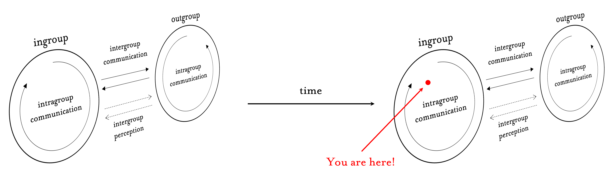
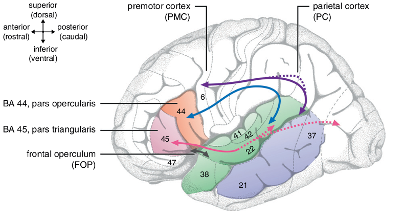

Evolution of social groups: harmony and conflict
How has the evolution of language affected intergroup dynamics? In other words, which elements of group-level behavior are context-independent, and which are derived from aspects of communication?
Shared reality theory contends that humans are motivated by a fundamental ‘will to mutual understanding’ — an innate drive to create between people a same-ness of perception and concept that allows for coordination and cooperation.
Humans’ success as a species is due in no small part to our endless project of semiotic innovation. Advances in language are combined with advances in media, leading to advances in civilization. This is the importance of communication.
The opportunity to form broader shared realities, afforded by information and communication, is not without its risks. Realities bifurcate when our desire to know exceeds our ability to find out. Organized religion represents an early, if not the very first such case. Around such nexus points form groups, from which humans may gain safety, comradery, resources, information, identity, and so much more. The agents in a group are neither individuals nor cogs; they are something in-between. The relationship between group and self is complex; but can be said to follow demands imposed by other groups unto one’s own.
Of course, the system modeled in the previous slide is dynamic across time. Time includes evolution, history, technological advancement, and movements in thought.
My objective is to explore how this system has changed over just such occurrences, if at all. My interest is in the rigidity of system-elements in the face of communicative, linguistic, and societal overhauls.
Understanding group behavior is, I believe, the key to understanding the individual. Social dynamics operate at a higher strata than does individual psychology. Enormous effort is required for a human or group to alter the dynamics of society at large, even for a moment. Caught in the flow of this relentless tide, the self retains some capacity to navigate.

Shared reality theory contends that humans are motivated by a fundamental ‘will to mutual understanding’ — an innate drive to create between people a same-ness of perception and concept that allows for coordination and cooperation.
‘Reality itself’ is not experienced directly. The reality known by biological life is will and representation — the actions and reactions of organs that receive, process, and send external stimuli. Lifeforms that must adapt to more complex environments benefit from greater detail (photoreceptor becomes eye) and greater numbers (one sense becomes five) of representations. Human beings are particularly talented at aligning their representations of reality with those of others, creating shared realities in which complex cooperation becomes possible.
Shared reality appears in simple cases. Mutual representation of the color ‘red’ prevents much confusion and allows many traffic systems to function. Simplicity of reality-merging is part of what makes games appealing — anybody can learn a game, at which point most representational-disagreement is resolved. Consider the significance of games known for players’ tendency to fight over the rules, or of groups that develop their own ‘house rules’ for certain games.
The power of shared reality is increased when shared representations become complex. We are at our most productive and most consequential when operating within intricate mental blueprints of reality that are shared by large numbers of cooperators. Thus, economic activity trends towards complexity of environment, processing, and response; while leisure activity trends towards simplicity. Complex leisure activities — often known as hobbies — frequently prompt group-joining to facilitate skill and knowledge development through the forming of shared reality.
Shared reality is the principal force of social dynamics. Groups are the principal social structure. Information is the matter from which the structure is built, and upon which the force acts. This is all due to the human faculty for communication.
Not shown is the influence of the will to shared reality. Like an attractor in chaos, the will pulls inwards from the center of a group, fusing its members ever closer. Just the same, groups repel one another. In the model, these attractions and repulsions are spatial. In reality, they are conceptual. Two groups cannot merge their realities, lest they become a single group. A single group cannot exist without continuously homogenizing its internal reality. This is how Tajfel was able to make enemies from nothing, and how Daryl Davis was able to ingratiate himself to groups predicated on hating him. Once the individuals are arranged, all that remains is social influence, which will act upon agents accordingly.
It becomes clear that an individual’s greatest strength is in his/her ability change one’s own arrangement within the social field. There is personal power over little else. In this way, trust can be understood as the currency of self-determination. In such a marketplace, the channels of trade consist of moving information. This is, in my theory, why the human language faculty so far exceeds the optimization-level found in any other cognitive processes, save for basic perception and memory — it is the most motivated.

How can this line of thought become an area of study? Further specification of the model should be guided by historical research into group conflicts across stages of human evolution and communication, and in light of advances in media technology. Also of interest are group harmonies. An information-theoretic characterization of group harmonies and conflicts will reveal how circumstances vary between the two types of relations, as well as across stages of media.
Ultimately, this model should be able to provide predictions. Experimental studies will confirm or deny the application of this model in predicting individual and group behavioral outcomes with regards to intergroup relations.